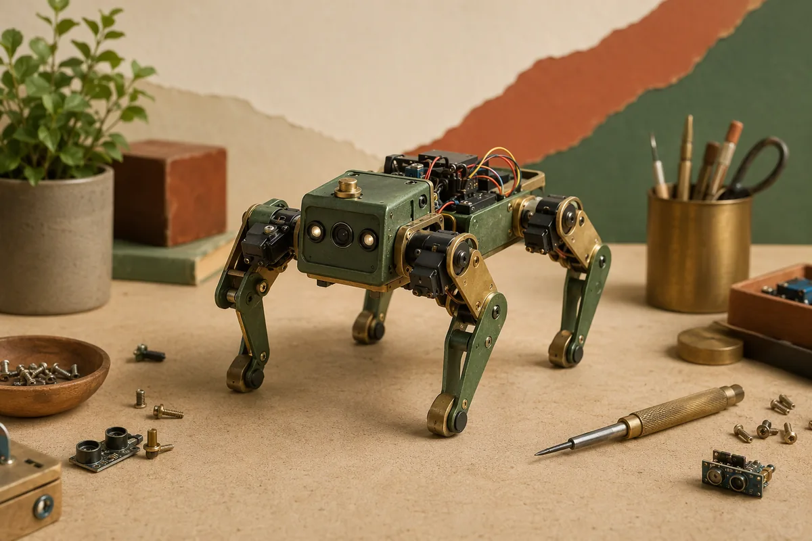
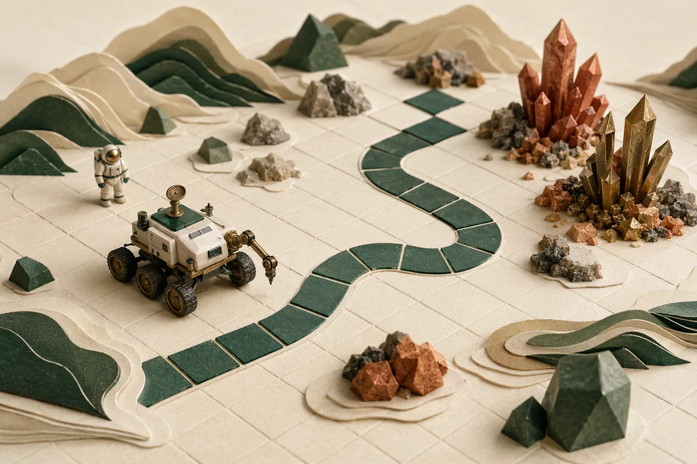
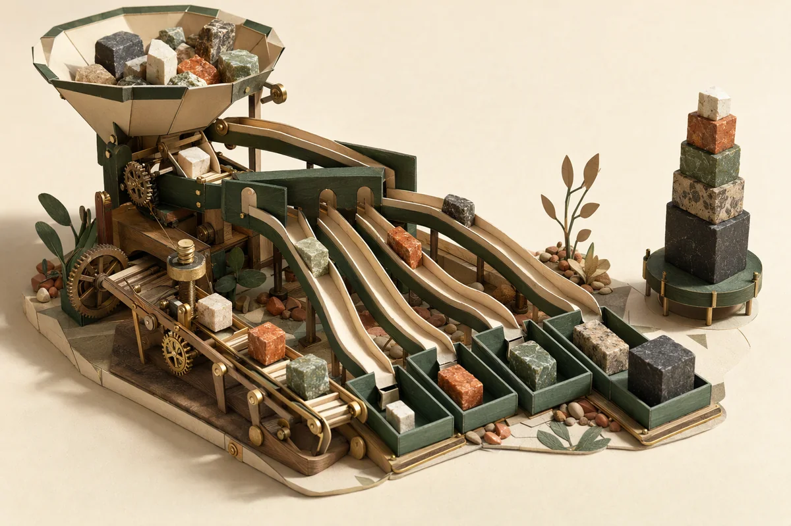
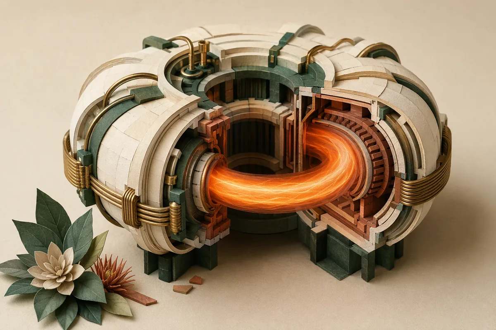
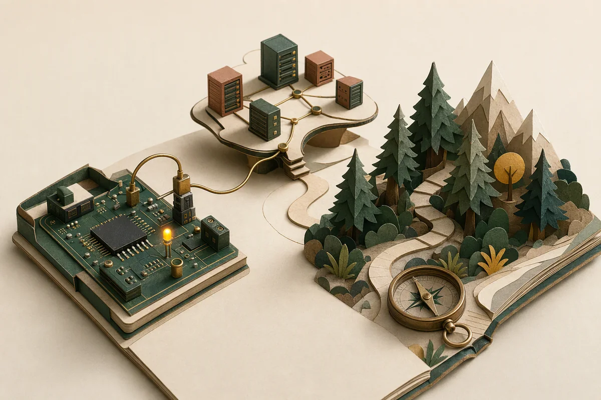
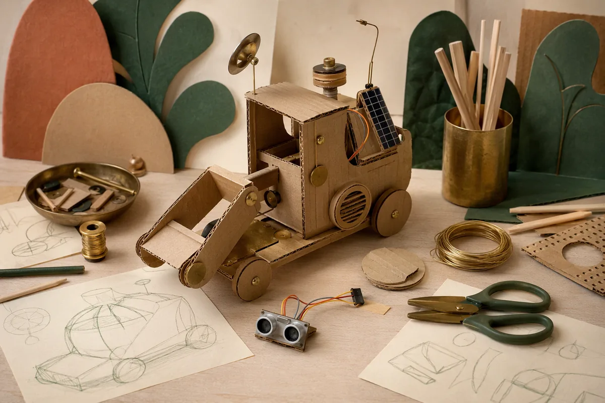

先听懂你，
再迈出第一步。
一台自己的四足机器人：先看见、听懂，再试着学走路。
机器人视觉 / 语音RL
看看三阶段路线
从每腿 2DOF 的视觉语音四足起步，加入 ToF 做 RL 学习，再升级每腿 3DOF。硬件接口预留与真实测试标准一起考虑。
项目计划，尚未实测；不是完整装配教程、采购报价或运动能力承诺。
查看机器人路线给不满足于「知道了」的你 / FIELD NOTES
机器人怎样迈出第一步？
一行代码，能打开哪扇门？
所有探索模块

一台自己的四足机器人：先看见、听懂，再试着学走路。
从每腿 2DOF 的视觉语音四足起步，加入 ToF 做 RL 学习，再升级每腿 3DOF。硬件接口预留与真实测试标准一起考虑。
项目计划，尚未实测；不是完整装配教程、采购报价或运动能力承诺。
查看机器人路线
想按比赛节奏做一套卷，还是挑一道关卡慢慢琢磨？
第一组：基础六关
第二组：综合四题
第三组：算法拓展四题
A/B题目版本，可换一组输入复练。
自编练习，非官方真题。建议用电脑，首次加载 Python 需要联网。

矿石排成数组，盘子叠成栈。看数据怎么动，再预测下一步。
数组 / 栈 / 队列 / 查找 / BFS；插入 / 归并 / 快速 / 堆排序；递归 / 二叉树 / 博弈。

装货、采矿、救援，或在星际赛道上超车。用英文单词、Python 常用词和符号，推动真正的任务行动。
星矿补给站 / 太空防御 / 星际反击 / 矿带采集 / 太空救援 / 星际竞速。机械臂装船、激光拦截、导弹攻击、钻取矿石、牵引救生舱与赛道推进；随机词句、音乐音效、本机排行榜和星级奖励。
排行榜与任务星级保存在当前浏览器 Cookie，不上传、不跨设备同步；清理 Cookie 会清空成绩和星级。
开始打字游戏
六套互动课程，从电子电路、Arduino 与 ESP32，到网络协议、系统设计和野外技能。先看中文导读，再去原作者的课堂试一试。
原课程由 Dilum Sanjaya 制作；在外部网站打开，需要联网，进度不与 Lucas Lab 同步。户外内容仅作安全常识启蒙。
打开互动课程馆
以学校赛事为主，从 AI 创意作品、创客、智能未来与 WAICY 中，找一个自己能主导的小项目。
逐赛规则与证据缺口、选题与平台比较、原创贡献、真实测试、作品复用，以及可导出的行动清单。
家庭备赛参考，非官方规则或报名系统；学校AI赛完整附件仍待核实。
查看创意项目攻略码力少年小学入门组：把语法连成解题能力。12 节分课讲解，动笔推一遍，再动手验证。
逐页课件、手推过程、随堂选择与填空、C++ 本机编程任务、两套限时模拟、错题与学习记录。
依据 2026 年比赛总体方案编排；自制教学材料，非官方真题。默认已会基本 C++ 语法。
进入码力少年备战101 科创营方向，一张 50 分钟的小卷。找找数论、组合、热学、速度、代码手推与阅读，哪里还没想明白。
数学 60 分 / 语文 20 分 / 英语 20 分；计时与自动保存、开放题家长批阅、打印与导出。
根据 2026 年 10 月家长考情分享自编，非官方真题，不预测入营结果；页面列出来源及尚未核实内容。
打开综合摸底小卷中关村二小小升初：区分一派与二派，再看六所参考学校的实际课程、管理与就读地点。
2026 政策样本、六校对照、校区与借址、中签率的数据限制，以及访校核实清单。保留来源，也说明哪些还不知道。
家庭研究笔记，非招生通知。以毕业当年系统、具体小学和校区资格为准。
查看选校参考试试更短的词，或清除筛选查看全部模块。